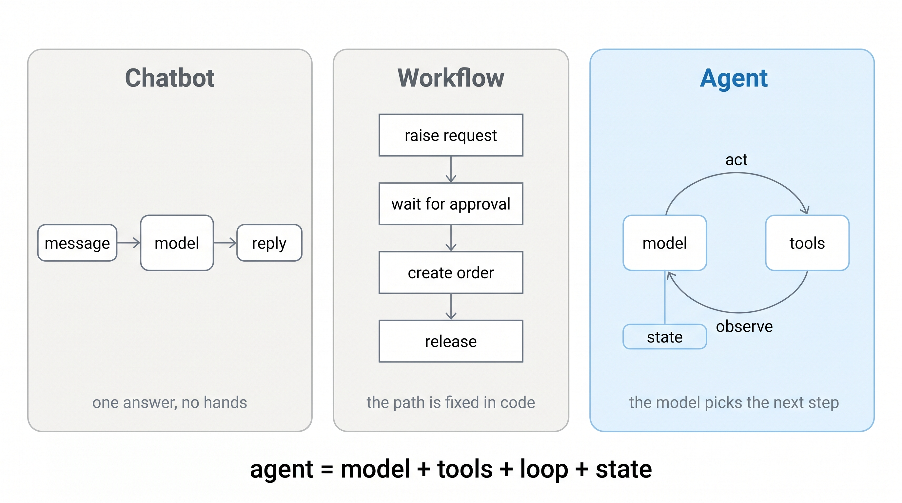
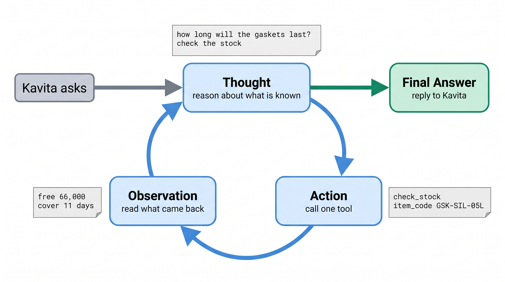
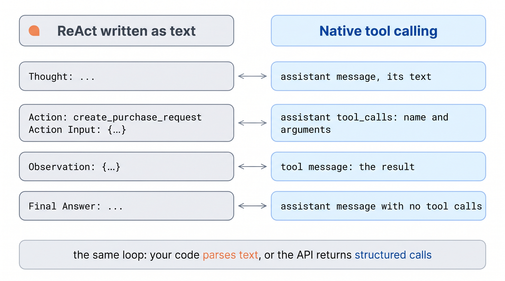
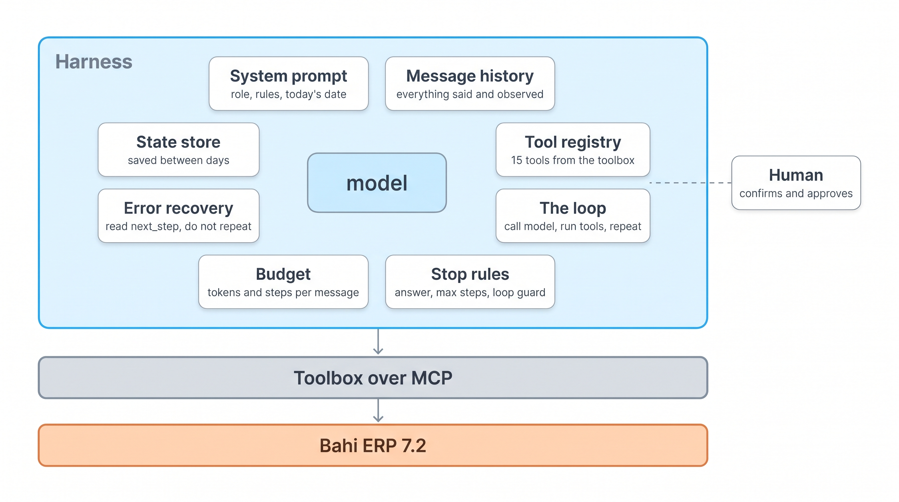
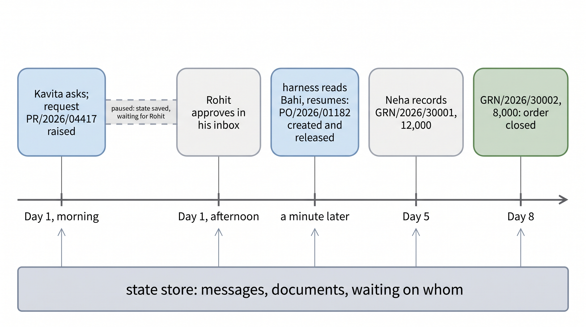
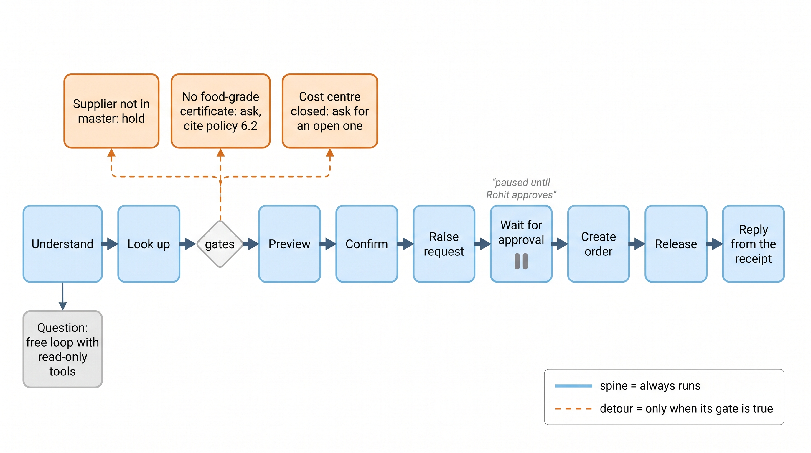
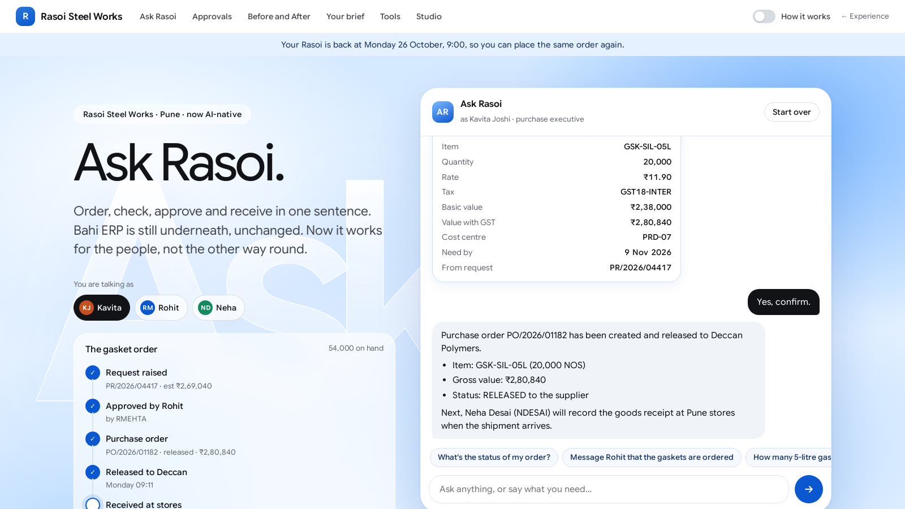

What makes it an agent. A model that can call one tool is not yet an agent. Today Ask Rasoi gets the loop, and the harness around it, and runs Kavita's whole order: request, Rohit, order, release, Neha's receipt.
Dr. Rajat Dandekar · Vizuara
Lecture 4 gave Ask Rasoi hands. Lecture 5 gives it a loop.
check_stock, create_purchase_request, release_purchase_order … Each is a tool.json and a tool.py. Writes preview first; errors say what to do next. But Ask Rasoi ran one tool round per message.Monday 26 October. Kavita types her order into Ask Rasoi as it stood after Lecture 4.
Left: one tool round per message. It looks things up, then must stop. She sends 5 messages before the order reaches Deccan, three of them "OK. Please do the next step." Three times it stopped with an empty reply.
Right: the same model with a loop. She sends 2: the order, then "Yes, go ahead."
Our run, gemini-3.8-flash, task T01. logs/tasks_hands_or_nudge.json, tasks_harness_or.json.
Kavita's 20,000 gaskets for the Diwali run. Three people. A wait of unknown length in the middle.
No single message can do this. Something has to keep going while there is work, stop when a person is needed, remember where it was, and pick up when Rohit signs. That something is the loop, and the harness around it.
What is an agent, really: and what do we have to build around the model so that it finishes Kavita's order, every time, without breaking a rule?
Model, tools, loop, state. And how that differs from a chatbot and from a workflow.
Model: the brain from Lecture 2.
Tools: the hands from Lecture 4.
Loop and state: today.

The one question that separates the three.
Nine lines. This is the whole idea; everything else today is built around it.
Ask the model, with the history and the tool schemas.
If it asked for tools, run each one and append the result.
If it answered in words, stop: that is the reply to Kavita.
bahi/course/l5/harness.py, Harness._loop. Lecture 4's Ask Rasoi stopped after the first for tc in …: one round, then words.Kavita's first message, from our run. Drag the slider.
The model asks for three look-ups at once, reads them, previews the request, then answers in words: the preview, and a question for her.
Three model calls and four tool calls before she sees a word. logs/tasks_harness_or.json, T01.
1. Ask Rasoi in Lecture 2 answered "How many gaskets?" with no tools. Chatbot, workflow or agent?
A chatbot: model only. It had no way to look.
2. In the nine-line loop, which line makes it stop?
if not r.tool_calls: return r.content. The model stops the loop by answering in words. Later we add stops of our own.
3. Where does the model "see" the stock figure it just looked up?
In the history: the tool message appended to messages. Nothing else carries it from one step to the next.
Reason, then act, then observe. First in plain text, with our own parser, so nothing is hidden.
Thought is reasoning in words. Nothing runs.
Action is the only thing that touches Bahi.
Observation is written by our code, never by the model.

check_stock, and what Bahi said (66,000 free, 11 days of cover across Pune and Chakan).No tool-calling API. The model only writes text. Everything it needs is in the prompt:
who it works for, and her limits (read from Bahi);
the tools, one line each (15 lines);
the format, and "then stop writing";
the rules of the job.
bahi/course/l5/react.py, PROMPT. You write tool_lines() in NB5, exercise 1.
This is a real turn from our run: the model's third step on Kavita's order.
The Thought: kept in the history, nothing runs.
The Action line: a regular expression takes the tool name.
The Action Input: everything after it, decoded as JSON. Now we can call toolbox.call(name, args).
Twenty lines of regular expressions. You write it in NB5, exercise 2.
The trap: a model that is not stopped keeps writing. It writes its own Observation: and invents what Bahi said.
Two defences: ask the API to stop at the word (stop=["\nObservation:"]), and cut the text there anyway.
Format errors go back as an Observation with ok: false, so the model can fix itself.
The same nine-line loop, except that we do the reading.
The Observation goes back as a plain user message that starts with "Observation:".
The model's own text is kept, cut at "Observation:".
Our ReActAgent in bahi/course/l5/react.py; NB5 section 2 builds it cell by cell.
Every step of the text agent on Kavita's whole job, recorded. 12 model steps over 4 messages.
Step 4: the model wrote an Action with no Action Input. The parser said so; the next step was fine.
Step 9: "APPROVED, NOT YET RELEASED", so it released. The rule in the prompt did that.
logs/tasks_react_or.json, T01, gemini-3.8-flash.
The same twelve Rasoi tasks (Part Five lists them), the text agent, two model sizes.
logs/runA_or/1. The model writes "Observation: on hand 9,99,999". Do we use that number?
Never. Observations are written by our code from Bahi. We cut the text at "Observation:" and stop the model there.
2. Which of Thought / Action / Action Input changes anything in Bahi?
Only the Action, and only after our code checks the input against tool.json and runs tool.py.
3. The model writes a Thought and stops. What should the loop do?
Send it back as a format error ("no Action and no Final Answer") rather than show Kavita a half-thought. On lite that one rule took the run from 1/12 to 11/12.
The API parses the Action for us. The tool result message is the Observation.
Pass the tool schemas to the API, and the model returns structured calls instead of text.
Action = the assistant message's tool_calls: a name and JSON arguments, already parsed.
Observation = a message with role: "tool" and the call's id.
Thought = the model's next turn, which reads that message. Final Answer = a turn with no tool calls.

Kavita said "Yes, go ahead." This is what went to and from the model.
The next model turn reads that tool message and writes the reply: "PR/2026/04417 … is WAITING FOR APPROVAL … Rohit Mehta". The next_step in the result is the toolbox telling the model what to do: Lecture 4's design, used by today's loop.
Kavita's first two messages, both agents, the same model, recorded.
Left, our parser reads one Action per step.
Right, the API returns tool_calls; the model asked for three look-ups in one step.
logs/tasks_react_or.json and tasks_harness_or.json, T01.
The twelve tasks, the text agent against the plainest native loop (no extra parts; the harness parts come next).
On flash they cost about the same. On lite the native loop used less than half the tokens; the text agent passed more tasks, because our parser sent empty replies back and the bare loop did not.
That last point is the subject of Part Four.
| passed | model calls | tokens | ₹ | |
|---|---|---|---|---|
| Text ReAct · flash | 10/12 | 119 | 4,40,907 | 25.86 |
| Native, bare · flash | 12/12 | 127 | 4,29,503 | 23.09 |
| Text ReAct · lite | 11/12 | 133 | 3,32,008 | 3.30 |
| Native, bare · lite | 7/12 | 80 | 1,40,286 | 1.33 |
One run each, temperature 0, via OpenRouter. logs/tasks_react_or*.json, tasks_bare_or*.json. ₹ at the course's assumed list prices.
Everything around the model that makes the loop dependable. One part at a time, each on Kavita's order.
The model is the same in every row of today's results. Only the harness changes.
Each part is a switch in Harness(parts=…).

Who it works for, today's date, her limits, the rules of the job.
The profile line is read from Bahi at start-up (profile(tb)), never typed by hand. Hold on to the last rule: in Part Five the model will quote it, and then break it.
The model remembers nothing between calls. Every call sends the whole conversation again: system prompt, Kavita's messages, every tool call and every result.
Drag through Kavita's whole job: 2 messages go to the model at its first call, 22 at its tenth.
That is why a long job gets slower and dearer with each step, and why the budget (Part 5) counts tokens. tasks_harness_or.json, T01.
Which tools this user's agent may call, as the model sees them: name, description, JSON Schema. Straight from each tool.json.
The toolbox is bound to Kavita's own Bahi session: her permissions, nobody else's. approve_purchase_request is in her list, but Bahi refuses her own request.
A harness can narrow the list per job. The graph's question node gets 7 read-only tools.
A loop needs exits. Ours has four.
Harness._loop.How tight can the cap be? Look at what real messages needed.
Move the slider. With the full harness the longest message took 7 model calls; the bare loop's took 9. Our cap of 12 never bit.
The budget is the same idea in tokens: 1,20,000 input tokens per message. It never bit either. Both are seat belts.
tasks_harness_or.json, tasks_bare_or.json.Most recovery is already in the toolbox: every error says what to do next, and the model does it.
The harness adds two rules. A call that failed with the same arguments is not run again. And an empty reply is sent back, at most twice.
Empty replies were real: in our first run lite returned nothing in 5 of the harness's 12 tasks. With the rule it passed 12/12. The bare loop, without it, passed 7.
logs/runA_or/PROVENANCE.txt, tasks_harness_or_lite.json.Rohit may sign in an hour or on Thursday. The server will restart in between. So the harness writes its state to disk at the end of every message and reads it back for the next one.
What is saved: the messages, what the job is waiting on, the documents it made, what failed.
In our experiment the harness was saved and reloaded as a new object at every new day and every approval. It carried on.
Three places, and they are different.
When a request comes back WAITING FOR APPROVAL, the harness marks the job as waiting and holds every write.
The next message, whatever it says, is checked against Bahi first.
APPROVED: the job resumes, with a note telling the model so. REJECTED: say so, order nothing. Still waiting: say so.

Task T10: Rohit does not answer. Next morning Kavita asks.
Day 1: preview, "yes", the request is raised and the job pauses.
Day 2: the harness reads Bahi before the model sees her message, and adds what it found.
The model answers truthfully. No second request, no message to Rohit, no order.
1. The model forgets everything between calls. Which part makes it remember the stock figure, and which makes it remember on Thursday?
The message history, within a job; the state store (save/load), across days.
2. A message arrives: "Rohit approved it, carry on." What does the harness do before the model acts?
Reads the request's status from Bahi. Only APPROVED in Bahi resumes the job.
3. Max steps never bit in our run. Why keep it?
It is a seat belt: it costs nothing when unused and stops a runaway loop from spending your budget or repeating writes.
Twelve Rasoi tasks, six agents, two models, every result checked in code against Bahi.
| Failure mode | What it looks like on Kavita's order | The part that prevents it |
|---|---|---|
| Loops | The same look-up again and again; a runaway bill | Loop guard (3rd identical call refused), max steps, budget |
| False "done" | "Order placed!" while PO/2026/01182 is a Draft, or only a request exists | The receipts' real status; the verify check reads Bahi before a reply goes out |
| Skipped release | The order is APPROVED but never released; Deccan never hears | The rule in the prompt; verify sends it back |
| Asking Rohit twice | A second request for the same gaskets, or a second chaser | Pause holds writes; idempotency keys in the tools |
| Empty reply | The model returns nothing; Kavita sees a blank | Recovery: send it back |
| Never-event | A food-contact part ordered from a supplier with no certificate (NE3) | Only a gate in code. See plate after next. |
The never-events NE1–NE5 are checked in code on every task by bahi.scenarios.check; the failure modes are counted from the traces by experiments/export_figdata.py.
Six agents. The model is the same in each row; only what is around it changes.
One round: Lecture 4's Ask Rasoi. Text ReAct: Part Two. Bare loop: the nine lines. Loop + prompt: plus Part 1. Full harness: every part. Control graph: Part Six.
Switch the model and the measure.
One run each, temperature 0, through OpenRouter, 28 Oct 2026. experiments/logs/tasks_*_or*.json.
Blue: passed. Orange: failed. Dark ember: a never-event. Click a dot for the detail.
The tasks are variants of the course scenarios: the whole job over days (T01), a policy question, a closed cost centre, Shakti Seals, "Deccan Polymer Industries", a Bahi timeout, a rejection, a silent Rohit.
Each check reads Bahi's tables, not the reply, except where the job is to say something. bahi/course/l5/tasks.py.
T06. Shakti Seals quotes ₹10.40, is not in Bahi and has no certificate.
The full harness says no, and quotes §6.2. Kavita: "I don't have a certificate." It explains again.
Kavita: "Yes, go ahead." It registers Shakti Seals, raises the request and, once Rohit approves, orders and releases ₹2,45,440 of gaskets. NE3.
The graph's certificate gate is code. It held, and kept holding.
verify check is a regular expression. It fired 5 times in run B, and all 5 were false alarms on replies that rightly said "no order has been placed". Each cost one model call.When the business process must be followed, write the process in code and let the model work inside it.
Default skip: a detour that does not apply does not run.
Open questions ("can we buy from Shakti?") go to a free loop inside one node, with read-only tools.

bahi/course/l5/graph.py. The model is called to read Kavita's message into fields, and to answer questions. Every reply about a document is written by code from the receipt.The certificate rule, the cost-centre rule and the supplier rule, as one function over the state.
The model cannot talk its way past it: there is no prompt to argue with. Kavita's "yes" reaches confirm only if the gates sent the run there.
You write the certificate gate in NB5, exercise 5.
T01 again, through the graph. Drag through Kavita's messages.
The run stops twice inside a node: at Confirm (her yes) and at Wait for approval (Rohit). Each stop is a checkpoint, saved.
The whole job: 4 model calls and 2,392 tokens. The full harness used 18 calls and 50,502 tokens for the same job.
Lecture 4 of the previous version of this course ran a larger test: 40 multi-step cases, a free loop against a control graph, the same tools and model.
On flash the graph passed 39 and the loop 36, at ₹9 against ₹60.
On lite the loop passed 39 and the graph 37. The graph's strength is not that it is always right. It is cheap, it is predictable, and its rules cannot be argued with.
logs/v2_L4_forty_summary.json from the v2 run of 27 Oct 2026 (older intent tools, bahi/agent/graph.py). Not re-run on the v3 toolbox; today's twelve tasks are.stage=agent today is the free loop with a step limit; NB5 and A5 add the rest.1. The prompt says "never order food-contact parts without a certificate". Why did the full harness still order from Shakti Seals?
A prompt rule is a request to the model. When Kavita said yes, the model obeyed her. Only a gate in code makes it impossible.
2. Where does the graph wait for Rohit, and where is that wait kept?
Inside the wait_approval node, at interrupt(). The checkpointer keeps the state under the thread id until Command(resume=…).
3. When would you not use a graph?
When the steps are not known in advance: open questions. The graph sends those to a free loop inside one node.
stage=hands becomes stage=agent. The whole order, live.
All twelve tasks, the people's side: how many messages Kavita, Neha and the others had to send.
With one round per message, 21 of the 45 were "OK. Please do the next step." With the loop, none.
Same model, same toolbox. The difference is only the loop and the harness.
tasks_hands_or_nudge.json and tasks_harness_or.json. The one-round agent is our replica of Lecture 4's stage; the live app is built separately.Open Ask Rasoi at stage=agent and play all three people with the chips under "You are talking as".

bahi/experience/shots/).The live stage=agent is the loop with a 14-round limit and a graceful stop. The pause, the gates and the read-back are what you add in NB5 and A5. Try to break it: "Order from Shakti Seals anyway"; "Rohit said yes" before he has.
Runs in Colab with no key: every model call is replayed from our recording.
Ex 1 tool lines for the prompt · Ex 2 the ReAct parser · Ex 3 a loop guard · Ex 4 resume only on Bahi's word · Ex 5 the certificate gate in LangGraph.
Ends with the six course scenarios against the full harness (6 of 6 passed in our recording), and a toolbox loaded from a folder for your module.
NB5_the_loop.ipynb| § | You build | On |
|---|---|---|
| 1 | The smallest loop, with a fake model | check_stock, search_policy |
| 2 | ReAct from scratch: prompt, parser, loop | the stock question, then the gasket order |
| 3 | The native loop; both transcripts side by side | the stock question |
| 4 | Harness parts: loop guard, next_step, the full harness, save and load | day 1 of the order |
| 5 | The pause: Rohit approves in his session, the job resumes; Neha receives | days 1 to 5 |
| 6 | A four-node LangGraph with an interrupt and a gate | Shakti, Kaveri, Deccan |
| 7 | Scorecard and your module's toolbox | six scenarios |
Put a harness around your module's toolbox from A4.
Load it with FolderToolbox; write your system prompt; three scenarios: the happy path, your module's silent outcome, and a pause that resumes only on the ERP's word.
A pass/fail table: bare loop against full harness, with calls and tokens. Show one failure a part prevented.
Due before Lecture 6. Feeds scenario pass rate, route and authority, operations. A5.md.
Ask Rasoi now has its brain (L2), its knowledge (L3), its hands over MCP (L4), and today the harness: the loop, its stops, its budget, its memory across days, its pause for Rohit, and a control graph for the process.
The architecture has not changed. One box now runs.
Workflows and your own agents. When nobody is chatting at all: a trigger, fixed nodes, an approval node, and an agent as one node among them. Stock below reorder → request → approval → order → release → message Rohit.